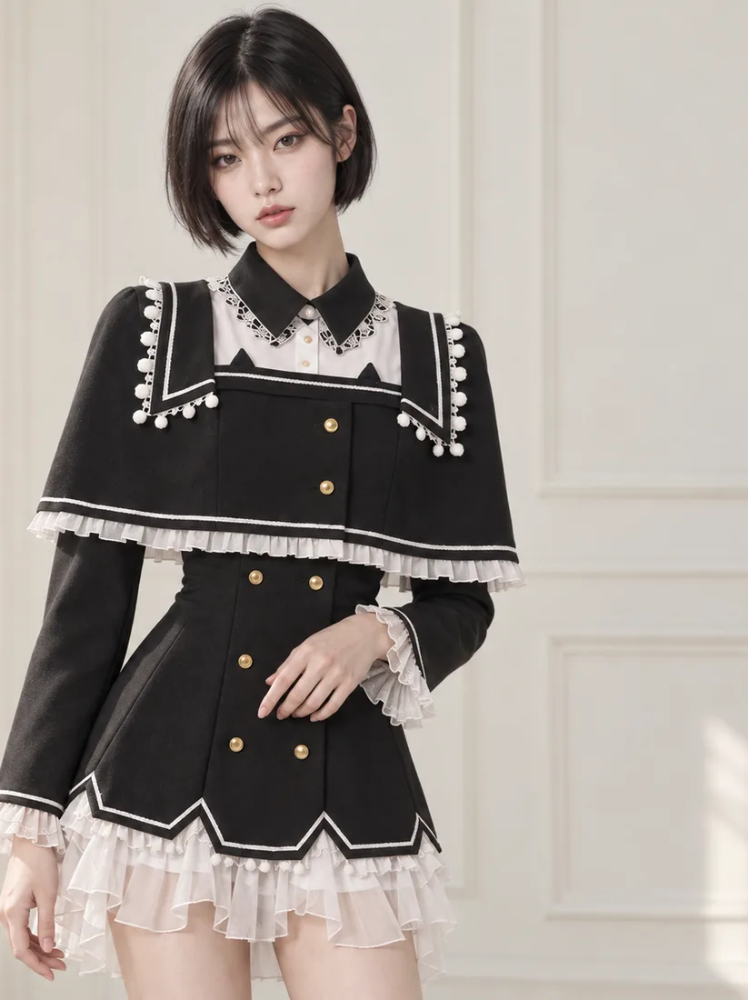
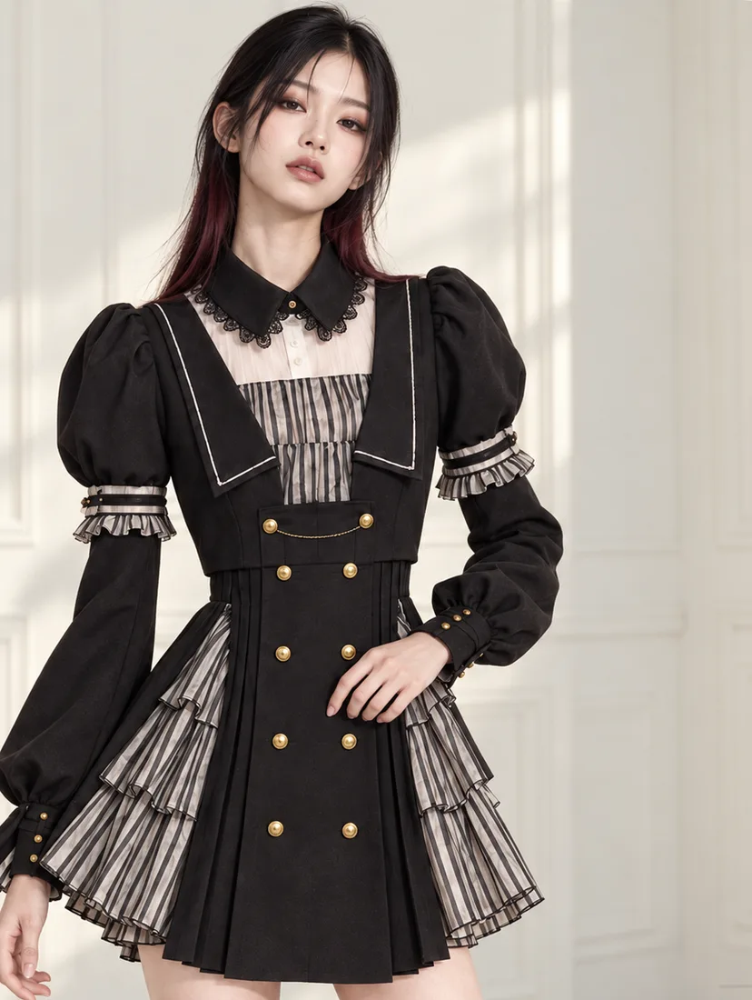
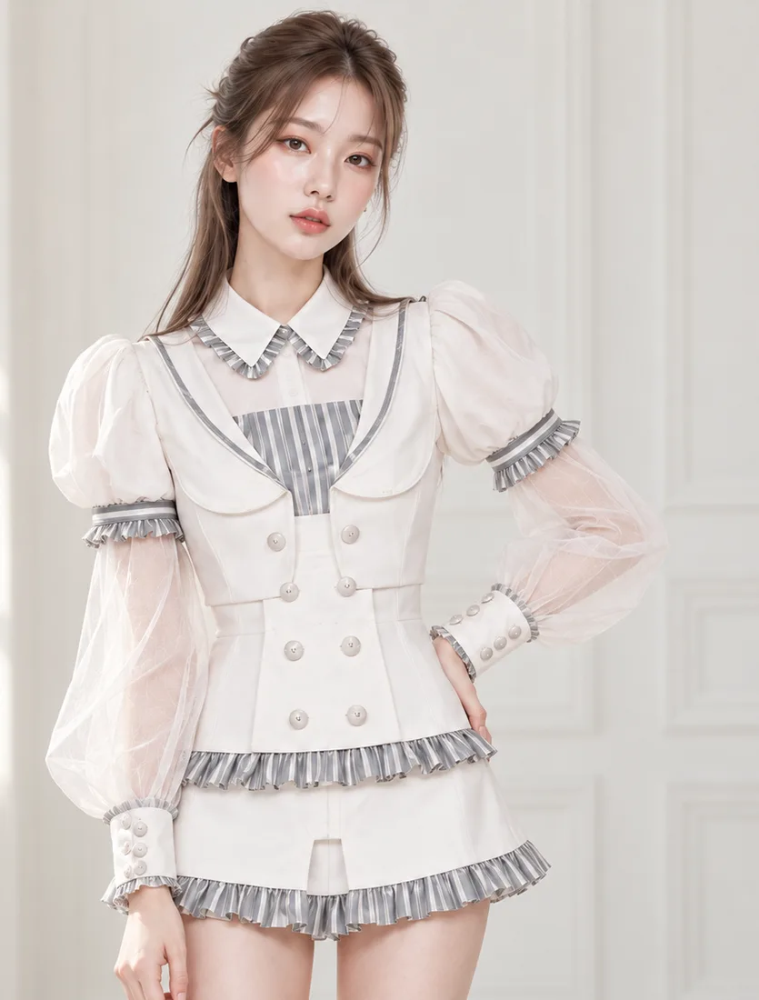
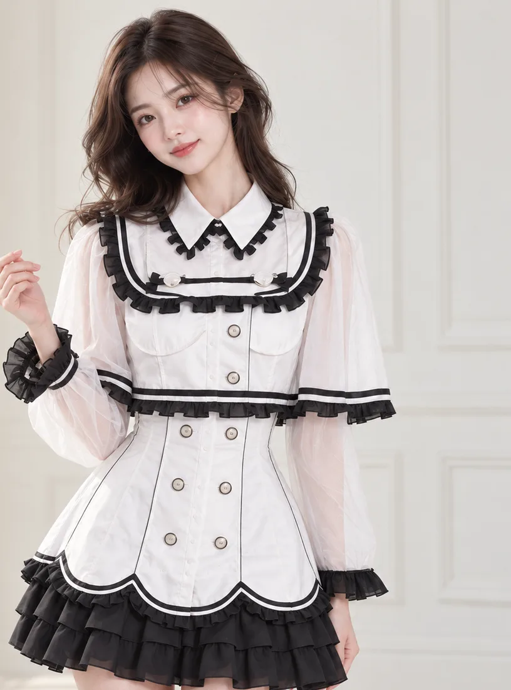

CH.01 SIG_ARCHIVE
BRAND ARCHIVE
EVERY
IDENTITY
ECHOES.
현실과 비현실의 경계에서 발견한 기억을
옷으로 기록하는 패션 아카이브.

01
MEMORY
어떤 장면은
오래도록 남는다.
좋아했던 세계는 시간이 지나도
우리 안에 남아 있습니다.
반복해서 듣던 음악, 애니메이션 속 한 장면, 마음을 닮은 캐릭터. 서브컬처에서 만난 경험은 개인의 기억이 되고, 나를 설명하는 취향이 됩니다.
ECHO ARCHIVE는 그 기억과 감정에서 옷의 이야기를 시작합니다.

02
TRANSLATE
기억을 번역해
옷의 언어로.
원본의 모습을 복제하기보다,
그 안에서 느낀 감각을 재해석합니다.
장면의 온도는 색이 되고, 인물의 태도는 실루엣이 됩니다. 작은 디테일까지 다듬어, 각자의 일상에 어울리는 옷으로 옮깁니다.
- 01분위기
- 02색과 실루엣
- 03디테일
- 04일상복

03
EVERYDAY
취향을 입는 데
특별한 날은 필요 없다.
좋아하는 세계의 감각을
오늘의 옷차림으로 이어갑니다.
행사나 촬영을 위한 코스튬을 넘어, 평소의 옷과 함께 입을 수 있는 패션을 생각합니다. 익숙한 하루에도 나만의 취향이 자연스럽게 드러나도록.
입는 사람의 방식으로 조합될 때, 옷의 이야기는 한 번 더 새로워집니다.

04
EPISODE & ARCHIVE
옷을 넘어,
하나의 이야기로 남다.
하나의 컬렉션은 하나의 Episode.
그 기록이 모여 아카이브가 됩니다.
옷, 모델 사진, 영상, 그리고 문장. 같은 감정에서 출발한 조각들을 연결해 컬렉션의 이야기를 함께 보관합니다.
새로운 Episode가 쌓일수록 ECHO ARCHIVE는 더 많은 취향과 기억을 담는 공간이 됩니다.
05
LOCAL CRAFT
중촌동의 손에서
완성되는 기록.
상상에서 시작한 옷에
오래 쌓인 제작 경험을 더합니다.
대전 중촌동 패션 맞춤 거리 장인의 기술과 ECHO ARCHIVE의 서브컬처 감각을 연결합니다. 소량으로 제작하며 디테일과 완성도를 살핍니다.
- 01세계관과 실루엣 스케치
- 02장인과 소재·패턴 협의
- 03소량 재단·봉제
- 04완성도 검수와 기록